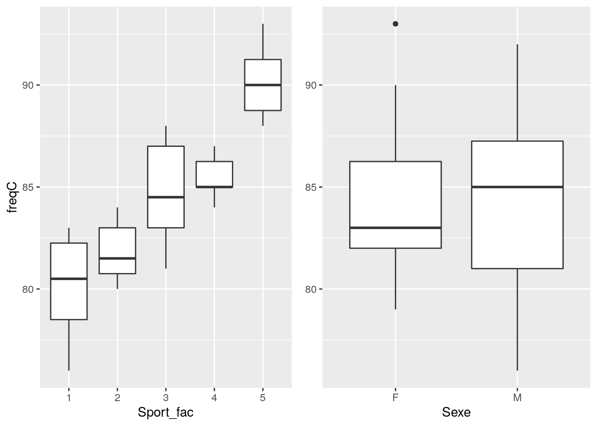
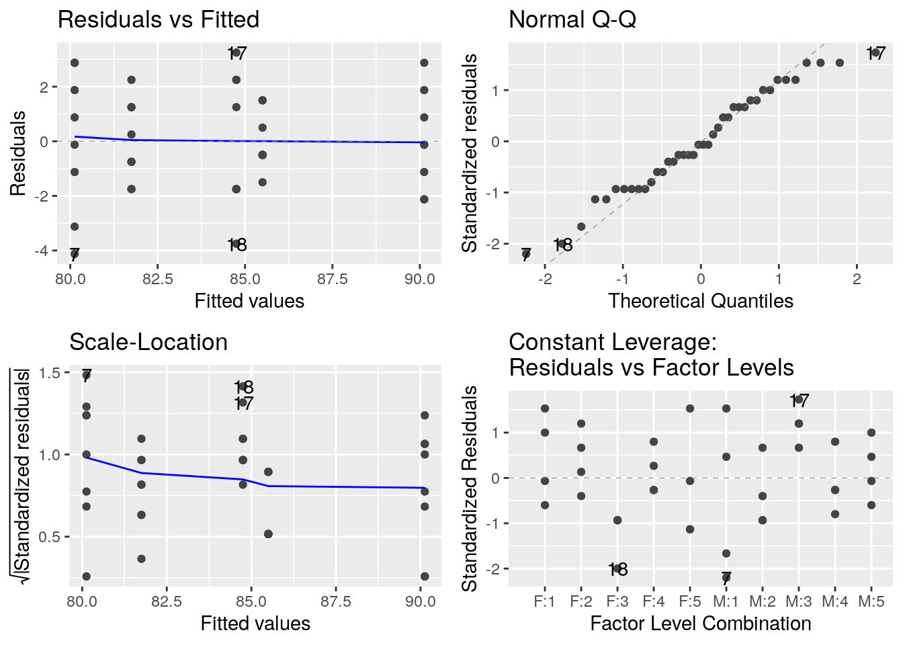
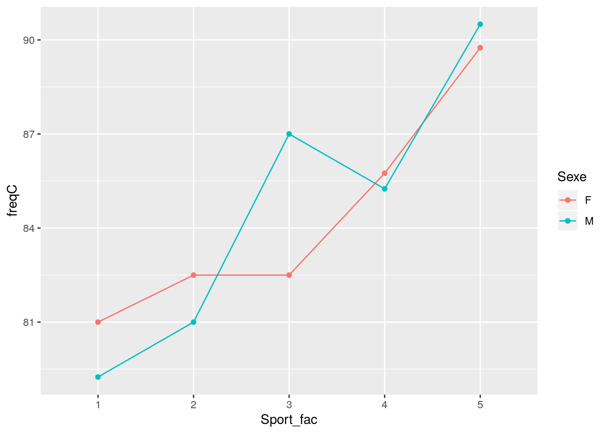
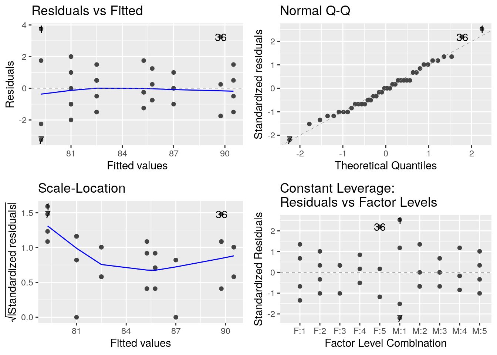
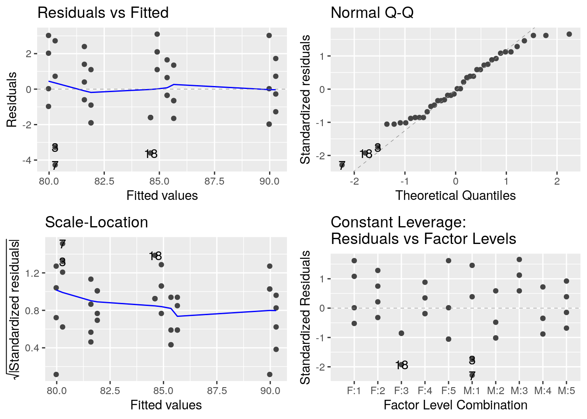
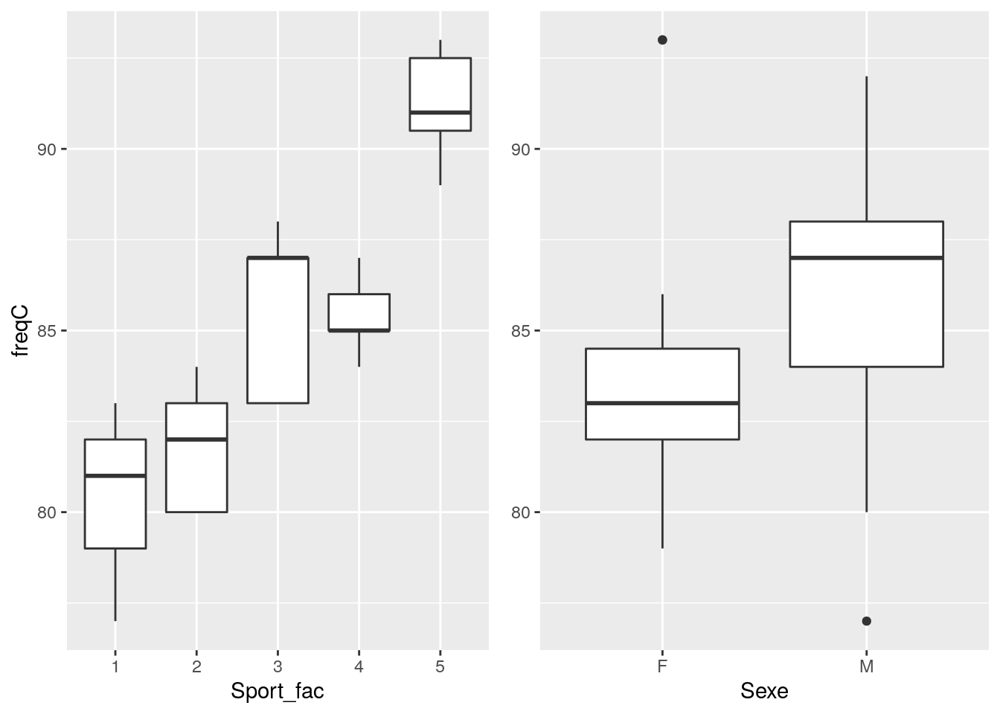
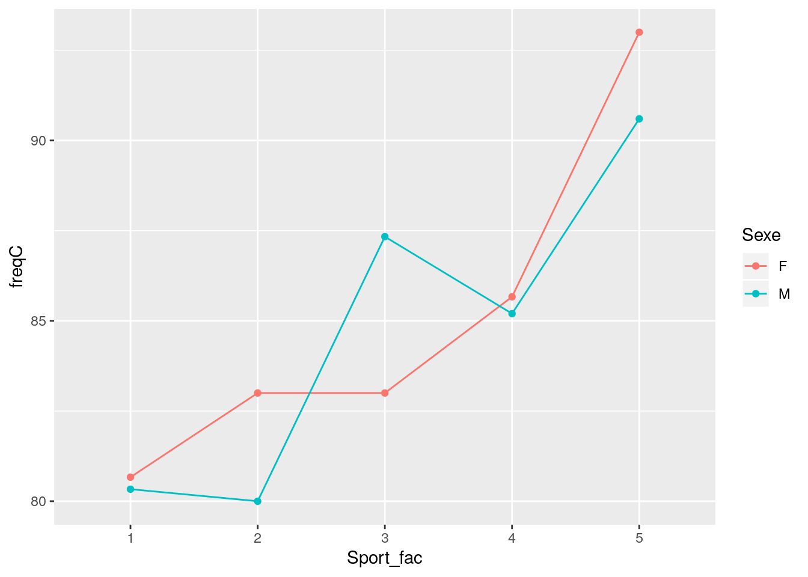
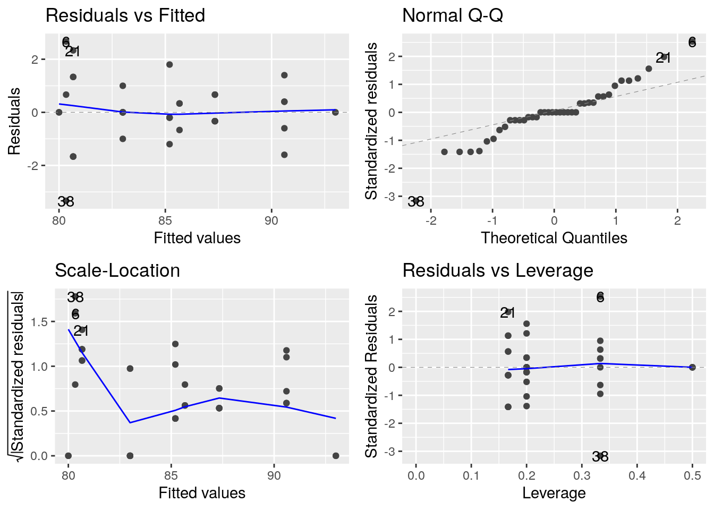

Les packages utiles pour cet exemple sont
#pour la fonction Anova
library(car)## Loading required package: carData# pour le tidyverse
library(tidyverse)## ── Attaching packages ───────────────────────────────── tidyverse 1.2.1 ──## ✔ ggplot2 3.2.1 ✔ purrr 0.3.2
## ✔ tibble 2.1.3 ✔ dplyr 0.8.3
## ✔ tidyr 0.8.3 ✔ stringr 1.4.0
## ✔ readr 1.3.1 ✔ forcats 0.4.0## ── Conflicts ──────────────────────────────────── tidyverse_conflicts() ──
## ✖ dplyr::filter() masks stats::filter()
## ✖ dplyr::lag() masks stats::lag()
## ✖ dplyr::recode() masks car::recode()
## ✖ purrr::some() masks car::some()# pour les graphiques
library(ggplot2)
library(ggfortify)
library(ggpubr)## Loading required package: magrittr##
## Attaching package: 'magrittr'## The following object is masked from 'package:purrr':
##
## set_names## The following object is masked from 'package:tidyr':
##
## extract# pour les moyennes ajustées
library(emmeans) #Présentation
On a enregistré pour 40 personnes, leur fréquence cardiaque au repos. On a noté pour chacune d’entre elles un niveau d’activité physique moyen ainsi que leur sexe. La variable sport varie de 1, très sportif, à 5 très sédentaire.
freq <- read.table("data/FreqCardiaqueEq.txt", skip=1, header=T, sep=" ")
summary(freq)## freqC Sport Sexe
## Min. :76.00 Min. :1 F:20
## 1st Qu.:81.75 1st Qu.:2 M:20
## Median :84.00 Median :3
## Mean :84.45 Mean :3
## 3rd Qu.:87.00 3rd Qu.:4
## Max. :93.00 Max. :5freq <- freq %>% mutate(Sport_fac = as.factor(Sport))
summary(freq)## freqC Sport Sexe Sport_fac
## Min. :76.00 Min. :1 F:20 1:8
## 1st Qu.:81.75 1st Qu.:2 M:20 2:8
## Median :84.00 Median :3 3:8
## Mean :84.45 Mean :3 4:8
## 3rd Qu.:87.00 3rd Qu.:4 5:8
## Max. :93.00 Max. :5#Etude descriptive des données
Plan d’expérience :
with( freq,
table(Sexe, Sport)
)## Sport
## Sexe 1 2 3 4 5
## F 4 4 4 4 4
## M 4 4 4 4 4# ou en mode tidy
freq %>% count(Sexe, Sport)## # A tibble: 10 x 3
## Sexe Sport n
## <fct> <int> <int>
## 1 F 1 4
## 2 F 2 4
## 3 F 3 4
## 4 F 4 4
## 5 F 5 4
## 6 M 1 4
## 7 M 2 4
## 8 M 3 4
## 9 M 4 4
## 10 M 5 4Moyennes et écart-types par groupes :
freq %>% group_by(Sexe) %>% summarise(mean_freq = mean(freqC))## # A tibble: 2 x 2
## Sexe mean_freq
## <fct> <dbl>
## 1 F 84.3
## 2 M 84.6freq %>% group_by(Sport) %>% summarise(mean_freq = mean(freqC))## # A tibble: 5 x 2
## Sport mean_freq
## <int> <dbl>
## 1 1 80.1
## 2 2 81.8
## 3 3 84.8
## 4 4 85.5
## 5 5 90.1freq %>% group_by(Sexe, Sport) %>% summarise(mean_freq = mean(freqC))## # A tibble: 10 x 3
## # Groups: Sexe [2]
## Sexe Sport mean_freq
## <fct> <int> <dbl>
## 1 F 1 81
## 2 F 2 82.5
## 3 F 3 82.5
## 4 F 4 85.8
## 5 F 5 89.8
## 6 M 1 79.2
## 7 M 2 81
## 8 M 3 87
## 9 M 4 85.2
## 10 M 5 90.5p1 <- ggplot(freq, aes(y=freqC, x = Sport_fac)) + geom_boxplot()
p2 <- ggplot(freq, aes(y=freqC, x = Sexe)) + geom_boxplot()
ggarrange(p1,p2+rremove('ylab'))
Question : ``Y a-t-il un effet de la pratique sportive sur la frequence cardiaque au repos ?’’
Ajustement du modèle :
lm_1 <- lm( freqC ~ Sport, data = freq)Estimation et test sur les paramètres
summary(lm_1)##
## Call:
## lm(formula = freqC ~ Sport, data = freq)
##
## Residuals:
## Min 1Q Median 3Q Max
## -3.7000 -1.5438 -0.1375 1.6125 3.8000
##
## Coefficients:
## Estimate Std. Error t value Pr(>|t|)
## (Intercept) 77.3250 0.7719 100.18 < 2e-16 ***
## Sport 2.3750 0.2327 10.21 1.94e-12 ***
## ---
## Signif. codes: 0 '***' 0.001 '**' 0.01 '*' 0.05 '.' 0.1 ' ' 1
##
## Residual standard error: 2.082 on 38 degrees of freedom
## Multiple R-squared: 0.7327, Adjusted R-squared: 0.7256
## F-statistic: 104.1 on 1 and 38 DF, p-value: 1.936e-12Oh mais ça n’est pas une analyse de variance. Quelle andouille j’ai oublié d’utiliser Sport_fac plutôt que Sport. Je recommence.
Ajustement du modèle :
lm_1 <- lm( freqC ~ Sport_fac, data = freq)Estimation et test sur les paramètres
summary(lm_1)##
## Call:
## lm(formula = freqC ~ Sport_fac, data = freq)
##
## Residuals:
## Min 1Q Median 3Q Max
## -4.125 -1.562 -0.125 1.500 3.250
##
## Coefficients:
## Estimate Std. Error t value Pr(>|t|)
## (Intercept) 80.125 0.709 113.012 < 2e-16 ***
## Sport_fac2 1.625 1.003 1.621 0.114
## Sport_fac3 4.625 1.003 4.613 5.14e-05 ***
## Sport_fac4 5.375 1.003 5.361 5.38e-06 ***
## Sport_fac5 10.000 1.003 9.973 9.09e-12 ***
## ---
## Signif. codes: 0 '***' 0.001 '**' 0.01 '*' 0.05 '.' 0.1 ' ' 1
##
## Residual standard error: 2.005 on 35 degrees of freedom
## Multiple R-squared: 0.7715, Adjusted R-squared: 0.7454
## F-statistic: 29.54 on 4 and 35 DF, p-value: 8.766e-11La matrice de design
model.matrix(lm_1)## (Intercept) Sport_fac2 Sport_fac3 Sport_fac4 Sport_fac5
## 1 1 0 0 0 0
## 2 1 0 0 0 0
## 3 1 0 0 0 0
## 4 1 0 0 0 0
## 5 1 0 0 0 0
## 6 1 0 0 0 0
## 7 1 0 0 0 0
## 8 1 0 0 0 0
## 9 1 1 0 0 0
## 10 1 1 0 0 0
## 11 1 1 0 0 0
## 12 1 1 0 0 0
## 13 1 1 0 0 0
## 14 1 1 0 0 0
## 15 1 1 0 0 0
## 16 1 1 0 0 0
## 17 1 0 1 0 0
## 18 1 0 1 0 0
## 19 1 0 1 0 0
## 20 1 0 1 0 0
## 21 1 0 1 0 0
## 22 1 0 1 0 0
## 23 1 0 1 0 0
## 24 1 0 1 0 0
## 25 1 0 0 1 0
## 26 1 0 0 1 0
## 27 1 0 0 1 0
## 28 1 0 0 1 0
## 29 1 0 0 1 0
## 30 1 0 0 1 0
## 31 1 0 0 1 0
## 32 1 0 0 1 0
## 33 1 0 0 0 1
## 34 1 0 0 0 1
## 35 1 0 0 0 1
## 36 1 0 0 0 1
## 37 1 0 0 0 1
## 38 1 0 0 0 1
## 39 1 0 0 0 1
## 40 1 0 0 0 1
## attr(,"assign")
## [1] 0 1 1 1 1
## attr(,"contrasts")
## attr(,"contrasts")$Sport_fac
## [1] "contr.treatment"Dans le modèle linéaire \(Y=X\theta +E\), l’estimation des paramètres est donnée par
\[ \hat{\theta} = (X^\prime X )^{-1} X^\prime Y.\]
On peut retrouver les valeurs estimées sur cet exemple
Y <- matrix(freq$freqC, ncol = 1)
X <- model.matrix(lm_1)
Xprime <- t(X)
solve(Xprime %*% X) %*% Xprime %*% Y## [,1]
## (Intercept) 80.125
## Sport_fac2 1.625
## Sport_fac3 4.625
## Sport_fac4 5.375
## Sport_fac5 10.000La loi de l’estimateur \(T\) correspondant est donné par
\[T\sim\mathcal{N}\left( \theta, \sigma^2 (X^\prime X)^{-1} \right)\]
anova(lm_1)## Analysis of Variance Table
##
## Response: freqC
## Df Sum Sq Mean Sq F value Pr(>F)
## Sport_fac 4 475.15 118.788 29.539 8.766e-11 ***
## Residuals 35 140.75 4.021
## ---
## Signif. codes: 0 '***' 0.001 '**' 0.01 '*' 0.05 '.' 0.1 ' ' 1autoplot(lm_1, data = freq)
Question : ``Y a-t-il un effet de la pratique sportive ou du sexe sur la frequence cardiaque au repos ?’’
freq %>%
ggplot() +
aes(x = Sport_fac, color = Sexe, group = Sexe, y = freqC) +
stat_summary(fun.y = mean, geom = "point") +
stat_summary(fun.y = mean, geom = "line")
Modèle avec interaction :
lmInt <- lm(freqC~Sexe+Sport+Sexe*Sport, data=freq)
summary(lmInt)##
## Call:
## lm(formula = freqC ~ Sexe + Sport + Sexe * Sport, data = freq)
##
## Residuals:
## Min 1Q Median 3Q Max
## -3.300 -1.319 -0.325 1.600 4.550
##
## Coefficients:
## Estimate Std. Error t value Pr(>|t|)
## (Intercept) 78.0750 1.0936 71.395 < 2e-16 ***
## SexeM -1.5000 1.5465 -0.970 0.339
## Sport 2.0750 0.3297 6.293 2.82e-07 ***
## SexeM:Sport 0.6000 0.4663 1.287 0.206
## ---
## Signif. codes: 0 '***' 0.001 '**' 0.01 '*' 0.05 '.' 0.1 ' ' 1
##
## Residual standard error: 2.085 on 36 degrees of freedom
## Multiple R-squared: 0.7458, Adjusted R-squared: 0.7246
## F-statistic: 35.21 on 3 and 36 DF, p-value: 8.35e-11 lmInt <- lm(freqC~Sexe+Sport_fac+Sexe*Sport_fac, data=freq)
summary(lmInt)##
## Call:
## lm(formula = freqC ~ Sexe + Sport_fac + Sexe * Sport_fac, data = freq)
##
## Residuals:
## Min 1Q Median 3Q Max
## -3.25 -1.00 0.00 1.00 3.75
##
## Coefficients:
## Estimate Std. Error t value Pr(>|t|)
## (Intercept) 81.0000 0.8563 94.588 < 2e-16 ***
## SexeM -1.7500 1.2111 -1.445 0.158819
## Sport_fac2 1.5000 1.2111 1.239 0.225104
## Sport_fac3 1.5000 1.2111 1.239 0.225104
## Sport_fac4 4.7500 1.2111 3.922 0.000473 ***
## Sport_fac5 8.7500 1.2111 7.225 4.84e-08 ***
## SexeM:Sport_fac2 0.2500 1.7127 0.146 0.884923
## SexeM:Sport_fac3 6.2500 1.7127 3.649 0.000991 ***
## SexeM:Sport_fac4 1.2500 1.7127 0.730 0.471147
## SexeM:Sport_fac5 2.5000 1.7127 1.460 0.154770
## ---
## Signif. codes: 0 '***' 0.001 '**' 0.01 '*' 0.05 '.' 0.1 ' ' 1
##
## Residual standard error: 1.713 on 30 degrees of freedom
## Multiple R-squared: 0.8571, Adjusted R-squared: 0.8143
## F-statistic: 20 on 9 and 30 DF, p-value: 2.327e-10Question : Y a-t-il un effet de la pratique sportive sur la fréquence cardiaque au repos ?'' \\ Question :Y a-t-il un effet du sexe sur la fréquence cardiaque au repos ?’’
Question : ``Y a-t-il un effet du sexe en interaction avec la pratique sportive sur la fréquence cardiaque au repos ?’’
anova(lmInt)## Analysis of Variance Table
##
## Response: freqC
## Df Sum Sq Mean Sq F value Pr(>F)
## Sexe 1 0.90 0.900 0.3068 0.583745
## Sport_fac 4 475.15 118.787 40.4957 1.105e-11 ***
## Sexe:Sport_fac 4 51.85 12.962 4.4190 0.006299 **
## Residuals 30 88.00 2.933
## ---
## Signif. codes: 0 '***' 0.001 '**' 0.01 '*' 0.05 '.' 0.1 ' ' 1 Anova(lmInt, type="II")## Anova Table (Type II tests)
##
## Response: freqC
## Sum Sq Df F value Pr(>F)
## Sexe 0.90 1 0.3068 0.583745
## Sport_fac 475.15 4 40.4957 1.105e-11 ***
## Sexe:Sport_fac 51.85 4 4.4190 0.006299 **
## Residuals 88.00 30
## ---
## Signif. codes: 0 '***' 0.001 '**' 0.01 '*' 0.05 '.' 0.1 ' ' 1autoplot(lmInt, data = freq)
Modèle sans interaction :
lm1 <- lm(freqC~Sexe+Sport_fac, data=freq)
summary(lm1)##
## Call:
## lm(formula = freqC ~ Sexe + Sport_fac, data = freq)
##
## Residuals:
## Min 1Q Median 3Q Max
## -4.275 -1.600 -0.125 1.462 3.100
##
## Coefficients:
## Estimate Std. Error t value Pr(>|t|)
## (Intercept) 79.9750 0.7855 101.816 < 2e-16 ***
## SexeM 0.3000 0.6413 0.468 0.643
## Sport_fac2 1.6250 1.0141 1.602 0.118
## Sport_fac3 4.6250 1.0141 4.561 6.32e-05 ***
## Sport_fac4 5.3750 1.0141 5.300 6.99e-06 ***
## Sport_fac5 10.0000 1.0141 9.861 1.67e-11 ***
## ---
## Signif. codes: 0 '***' 0.001 '**' 0.01 '*' 0.05 '.' 0.1 ' ' 1
##
## Residual standard error: 2.028 on 34 degrees of freedom
## Multiple R-squared: 0.7729, Adjusted R-squared: 0.7395
## F-statistic: 23.15 on 5 and 34 DF, p-value: 4.63e-10Question : Y a-t-il un effet de la pratique sportive sur la fréquence cardiaque au repos ?''\\ Question :Y a-t-il un effet du sexe sur la fréquence cardiaque au repos ?’’
anova(lm1)## Analysis of Variance Table
##
## Response: freqC
## Df Sum Sq Mean Sq F value Pr(>F)
## Sexe 1 0.90 0.900 0.2188 0.6429
## Sport_fac 4 475.15 118.787 28.8793 1.643e-10 ***
## Residuals 34 139.85 4.113
## ---
## Signif. codes: 0 '***' 0.001 '**' 0.01 '*' 0.05 '.' 0.1 ' ' 1 Anova(lm1, type="II")## Anova Table (Type II tests)
##
## Response: freqC
## Sum Sq Df F value Pr(>F)
## Sexe 0.90 1 0.2188 0.6429
## Sport_fac 475.15 4 28.8793 1.643e-10 ***
## Residuals 139.85 34
## ---
## Signif. codes: 0 '***' 0.001 '**' 0.01 '*' 0.05 '.' 0.1 ' ' 1autoplot(lm1)
freq2 <- read.table(file = "data/FreqCardiaqueDes1.txt", header = T)
freq2 <- freq2 %>% mutate(Sport_fac = as.factor(Sport))
freq2 %>% count(Sport, Sexe) ## # A tibble: 10 x 3
## Sport Sexe n
## <int> <fct> <int>
## 1 1 F 6
## 2 1 M 3
## 3 2 F 3
## 4 2 M 2
## 5 3 F 5
## 6 3 M 6
## 7 4 F 3
## 8 4 M 5
## 9 5 F 2
## 10 5 M 5Moyennes et écart-types par groupes :
freq2 %>% group_by(Sport) %>% summarise(mean_freq = mean(freqC)) ## # A tibble: 5 x 2
## Sport mean_freq
## <int> <dbl>
## 1 1 80.6
## 2 2 81.8
## 3 3 85.4
## 4 4 85.4
## 5 5 91.3freq2 %>% group_by(Sexe) %>% summarise(mean_freq = mean(freqC)) ## # A tibble: 2 x 2
## Sexe mean_freq
## <fct> <dbl>
## 1 F 83.7
## 2 M 85.9freq2 %>% group_by(Sport, Sexe) %>% summarise(mean_freq = mean(freqC)) ## # A tibble: 10 x 3
## # Groups: Sport [5]
## Sport Sexe mean_freq
## <int> <fct> <dbl>
## 1 1 F 80.7
## 2 1 M 80.3
## 3 2 F 83
## 4 2 M 80
## 5 3 F 83
## 6 3 M 87.3
## 7 4 F 85.7
## 8 4 M 85.2
## 9 5 F 93
## 10 5 M 90.6p1 <- ggplot(freq2, aes(y=freqC, x = Sport_fac)) + geom_boxplot()
p2 <- ggplot(freq2, aes(y=freqC, x = Sexe)) + geom_boxplot()
ggarrange(p1,p2+rremove('ylab'))
freq2 %>%
ggplot() +
aes(x = Sport_fac, color = Sexe, group = Sexe, y = freqC) +
stat_summary(fun.y = mean, geom = "point") +
stat_summary(fun.y = mean, geom = "line")
lm2 <- lm(freqC~Sexe+Sport, data=freq2)
autoplot(lm2)
anova(lm2)## Analysis of Variance Table
##
## Response: freqC
## Df Sum Sq Mean Sq F value Pr(>F)
## Sexe 1 46.88 46.88 9.9993 0.003122 **
## Sport 1 408.02 408.02 87.0269 2.944e-11 ***
## Residuals 37 173.47 4.69
## ---
## Signif. codes: 0 '***' 0.001 '**' 0.01 '*' 0.05 '.' 0.1 ' ' 1 Anova(lm2, type="II")## Anova Table (Type II tests)
##
## Response: freqC
## Sum Sq Df F value Pr(>F)
## Sexe 1.22 1 0.260 0.6131
## Sport 408.02 1 87.027 2.944e-11 ***
## Residuals 173.47 37
## ---
## Signif. codes: 0 '***' 0.001 '**' 0.01 '*' 0.05 '.' 0.1 ' ' 1